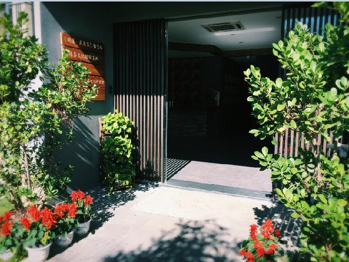

武夷山谁家院
武夷山谁家院位于武夷山度假区中心，地处景区派出所后方，与景区对望，闹中取静。这里交通便捷，距景区入口3公里，各站点均有公交车可抵达。
院内装潢设计采用新中式、禅意、LOFT相结合的风格，朴实自然，淡雅别致，简约实用。客房地暖、空调一应俱全，为你打造最舒适的入住体验。
这里还设书吧、茶室，每个客房还设有独立的泡茶空间，并且免费为你提供产自谁家院生态茶园的有机岩茶，让品味武夷茶真味。客栈独有泡茶专用装置，让您随时随地，好茶在手。
这里贴近居民生活区，餐饮便利，让你品味地道武夷风味，体验武夷山风土人情。
这里提供品类齐全，营养丰盛的免费早餐，不仅有武夷山本土特色小吃，还有院子自植的新鲜时蔬。
这里可提供租车服务（九座奔驰商务车），专用司机随叫随到，方便你的出行。（需提前预定）
这里遵循“谁来谁家院”的服务理念，为你提供落地武夷山以后的各种咨询服务，可以代订景区门票、印象大红袍等旅游票务，为你提供最贴心的出行计划。
